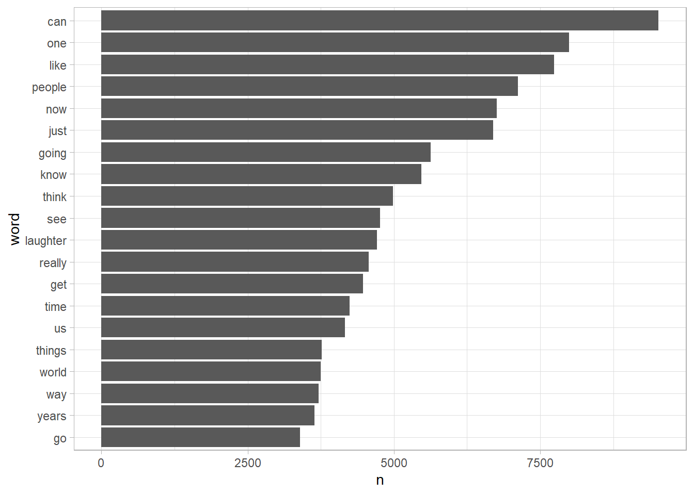
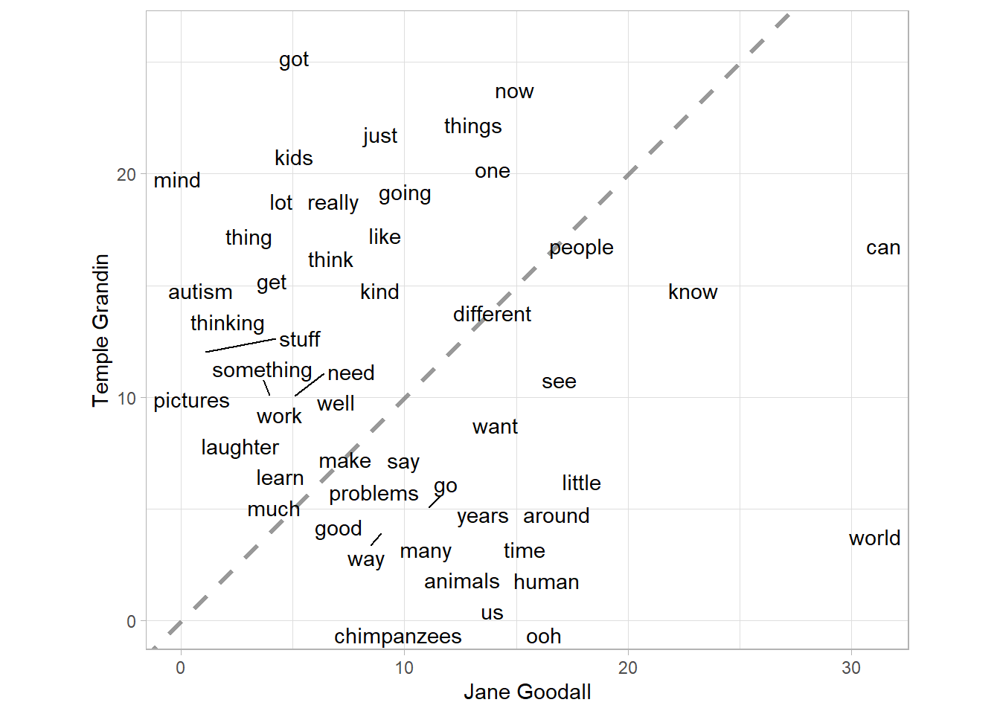

# load the tidytext packageText mining with tidy data principles
Learn how to use tidytext!
1. Introduction
Text data sets are diverse and ubiquitous, and tidy data principles provide an approach to make text mining easier, more effective, and consistent with tools already in wide use. In this tutorial, you will develop your text mining skills using the tidytext package in R, along with other tidyverse tools. You will apply these skills in several case studies, which will allow you to:
- practice important data handling skills,
- learn about the ways text analysis can be applied, and
- extract relevant insights from real-world data.
Working through this tutorial
Throughout this tutorial, you will see code exercises that look like this:
# load the tidytext package
library(tidytext)grade_code("Be sure to click \"Submit Answer \" on exercises throughout the tutorial because there are hints, answers, and other content available to you after you submit.")function (check_env)
{
if (is.list(check_env)) {
check_env <- list2env(check_env)
}
user_code <- check_env$.user_code
if (is.null(user_code)) {
return(legacy_graded(correct = FALSE, message = "I didn't receive your code. Did you write any?"))
}
solution_code_all <- check_env$.solution_code_all
if (is.null(solution_code_all) || length(str2expression(solution_code_all)) ==
0) {
solution_code_all <- solutions_prepare(check_env$.solution_code)
}
if (is.null(solution_code_all) || length(str2expression(solution_code_all)) ==
0) {
return(legacy_graded(correct = FALSE, message = "No exercise solution provided. Defaulting to _incorrect_."))
}
message <- code_feedback(user_code = user_code, solution_code = solution_code_all,
user_env = check_env$.envir_result %||% check_env, solution_env = check_env$.envir_solution %||%
check_env, allow_partial_matching = allow_partial_matching)
if (is.null(message)) {
return(legacy_graded(correct = TRUE, message = glue_message(glue_correct %||%
gradethis_legacy_options$gradethis.glue_correct,
.is_correct = TRUE, .message = NULL, .correct = correct,
.user_code = user_code)))
}
message <- glue_message(glue_incorrect %||% gradethis_legacy_options$gradethis.glue_incorrect,
.is_correct = FALSE, .message = message, .incorrect = incorrect,
.user_code = user_code)
legacy_graded(correct = FALSE, message = message)
}
<bytecode: 0x0000025ab8c14d08>
<environment: 0x0000025ab8c1dad8>You can type in these code exercises. Give it a try now! If you mess up, click “Start Over” to get back to the original state. Use the “Run Code” button to see what happens, and click on “Solution” to check out the solution.
In the exercise above, type library(tidytext) and click “Submit Answer”.
This tutorial is organized into four case studies, each with its own data set:
- transcripts of TED talks
- a collection of comedies and tragedies by Shakespeare
- one month of newspaper headlines
- song lyrics spanning five decades
These case studies demonstrate how you can use text analysis techniques with diverse kinds of text!
Prerequisites
To get the most from this tutorial, you should have some familiarity with R and tidyverse functions like those from dplyr and ggplot2. If you have read R for Data Science by Hadley Wickham and Garrett Grolemund, you are good to go!
2. Thank you for coming to my TED talk
The first case study of this tutorial uses a data set of TED talks created by Katherine M. Kinnaird and John Laudun for their paper “TED Talks as Data”. The specific talks we are using are from the main TED event, and the data set was curated in the summer of 2018.
There are two main pieces of R software we will use in our text analysis work throughout this tutorial, the tidyverse metapackage and tidytext. To clarify for yourself what tools you are using, load the two packages below (first tidyverse, and then tidytext) by replacing the ___ with the package names.
# load the tidyverse and tidytext packages
#library(___)
#library(___)# load the tidyverse and tidytext packages
library(tidyverse)
library(tidytext)TED talk transcripts
The TED talk transcripts are available to you in a dataframe called ted_talks. There are three variables in this data set:
talk_id: the identifier from the TED website for this particular talktext: the text of this TED talkspeaker: the main or first listed speaker (some TED talks have more than one speaker)
# glimpse `ted_talks` to see what is in the data set
#glimpse(___)# glimpse `ted_talks` to see what is in the data set
glimpse(ted_talks)Rows: 992
Columns: 3
$ talk_id <dbl> 1, 7, 53, 66, 92, 96, 49, 86, 71, 94, 54, 55, 58, 41, 65, 46, …
$ text <chr> "Thank you so much, Chris. And it's truly a great honor to hav…
$ speaker <chr> "Al Gore", "David Pogue", "Majora Carter", "Ken Robinson", "Ha…How to tidy text data
The text data is currently in a dataframe, but it is not tidy in the sense of being compatible with tidy tools. We need to transform it so that it is in a different format, with one observation per row.
When we do text analysis, the observations we are interested in aren’t the whole talks at once, but rather individual tokens. A token is a meaningful unit of text for analysis; in many cases, this just means a single word. The process of tokenization identifies and breaks apart text into individual tokens. You can use tidytext’s unnest_tokens() function to accomplish all of this at once, both the tidying and the tokenization.
#tidy_talks <- ted_talks %>%
# ___(word, text)tidy_talks <- ted_talks %>%
unnest_tokens(word, text)Tidy TED talks
The unnest_tokens() function transforms non-tidy text data into tidy text data. It takes three arguments:
- the input dataframe that contains your text (often you will use the pipe
%>%to send this argument tounnest_tokens()), - the output column that you want to unnest to, and
- the input column that you want to unnest from.
tidy_talks# A tibble: 2,005,342 × 3
talk_id speaker word
<dbl> <chr> <chr>
1 1 Al Gore thank
2 1 Al Gore you
3 1 Al Gore so
4 1 Al Gore much
5 1 Al Gore chris
6 1 Al Gore and
7 1 Al Gore it's
8 1 Al Gore truly
9 1 Al Gore a
10 1 Al Gore great
# ℹ 2,005,332 more rowsWhat did unnest_tokens() do here? Instead of having 992 rows and reading each talk across the line in text, we now have 2,005,342 rows and can read each talk down the column in word. We have tokenized and tidied the text, as well as a few other transformations:
- Other columns have been retained.
- Punctuation has been stripped out.
- Words have been converted to lower-case.
These are defaults in the function that can be changed, if not appropriate to your analysis.
Tokenize to bigrams
We said before that tokenization is the process of identifying and breaking apart text into tokens, meaningful units of text; those meaningful units of text are most often single words in text analysis but they do not have to be! We can move beyond single words to other kinds of tokens, like n-grams. An n-gram is a consecutive sequence of n words. Let’s look at these TED talks and tokenize to bigrams, n-grams of order 2.
- Use the same function for tokenizing and tidying to create the bigrams.
#ted_bigrams <- ted_talks %>%
# ___(bigram, text, token = "ngrams", n = 2)
#ted_bigramsted_bigrams <- ted_talks %>%
unnest_tokens(bigram, text, token = "ngrams", n = 2)
ted_bigrams# A tibble: 2,004,350 × 3
talk_id speaker bigram
<dbl> <chr> <chr>
1 1 Al Gore thank you
2 1 Al Gore you so
3 1 Al Gore so much
4 1 Al Gore much chris
5 1 Al Gore chris and
6 1 Al Gore and it's
7 1 Al Gore it's truly
8 1 Al Gore truly a
9 1 Al Gore a great
10 1 Al Gore great honor
# ℹ 2,004,340 more rowsMost common TED talk words
Let’s go back to single words. Now that our data in a tidy format, a whole world of analysis opportunity has opened up for us. We can start by computing term frequencies in just one line. What are the most common words in these TED talks?
- Use
count()to find the most common words.
#tidy_talks %>%
# ___(word, sort = TRUE)tidy_talks %>%
count(word, sort = TRUE)# A tibble: 41,303 × 2
word n
<chr> <int>
1 the 93853
2 and 67710
3 to 57089
4 of 52313
5 a 49129
6 that 39019
7 in 34728
8 i 32793
9 you 30013
10 is 28569
# ℹ 41,293 more rowsRemoving stop words
Words like “the”, “and”, and “to” that aren’t very interesting for a text analysis are called stop words. Often the best choice is to remove them. The tidytext package provides access to stop word lexicons, with a default list and then other options and other languages.
- First, run the code the way it is.
- Next, try out the
languageargument, which takes two-letter language abbreviations like"es".
When text data is in a tidy format, stop words can be removed using an anti_join(). This type of join will “filter” or remove items that are in the right-hand side, keeping those in the left-hand side.
- Within the
anti_join(), add the call toget_stopwords(). - Add the arguments to
count()so we count up words and sort them with the largest groups at the top.
#tidy_talks %>%
# anti_join(___) %>%
# count(___)tidy_talks %>%
anti_join(get_stopwords()) %>%
count(word, sort = TRUE)Joining with `by = join_by(word)`# A tibble: 41,129 × 2
word n
<chr> <int>
1 can 9522
2 one 7995
3 like 7739
4 people 7123
5 now 6756
6 just 6701
7 going 5633
8 know 5467
9 think 4981
10 see 4760
# ℹ 41,119 more rowsVisualize top words
Because we are using tidyverse tools, we can fluently pipe from the kind of code we just wrote straight to ggplot2 functions. One of the significant benefits of using tidy data principles is consistency with widely-used tools that are broadly supported.
- Remove stop words (the default list) via an
anti_join(). - Create a plot with
non the x-axis andwordon the y-axis.
#tidy_talks %>%
# remove stop words
# ___ %>%
# count(word, sort = TRUE) %>%
# slice_max(n, n = 20) %>%
# mutate(word = reorder(word, n)) %>%
# put `n` on the x-axis and `word` on the y-axis
# ggplot(aes(___, ___)) +
# geom_col()tidy_talks %>%
# remove stop words
anti_join(get_stopwords()) %>%
count(word, sort = TRUE) %>%
slice_max(n, n = 20) %>%
mutate(word = reorder(word, n)) %>%
# put `n` on the x-axis and `word` on the y-axis
ggplot(aes(n, word)) +
geom_col()Joining with `by = join_by(word)`
Compare TED talk vocabularies
One of my favorite approaches to text analysis is to compare how different people or groups use language. There are lots of different ways to do this, but you can start with plain old word counts! Let’s look at two TED talk speakers, Jane Goodall and Temple Grandin, and count up the words they used in their TED talks.
If you want to explore other speakers, switch out for different speakers’ names from the data set and hit “Run Code”, after finishing the exercise.
- Use
filter()to keep only the words spoken by Jane Goodall and Temple Grandin. - Remove the default list of stop words.
- Use
count()with two arguments to count up the term frequencies byspeakerandword. (These first three steps could actually be completed in any order but this makes most sense to me.) - Come back and
filter()again to only keep words spoken at least 10 times by both women.
The function pivot_wider() from tidyr pivots the long, tidy dataframe to a wide dataframe so we can more easily compare the two speakers’ word counts.
#tidy_talks %>%
# ___(speaker %in% c("Jane Goodall", "Temple Grandin")) %>%
# remove stop words
# ___ %>%
# count with two arguments
# ___ %>%
#group_by(word) %>%
#___(sum(n) > 10) %>%
#ungroup() %>%
#pivot_wider(names_from = "speaker", values_from = "n", values_fill = 0) tidy_talks %>%
filter(speaker %in% c("Jane Goodall", "Temple Grandin")) %>%
# remove stop words
anti_join(get_stopwords()) %>%
# count with two arguments
count(speaker, word) %>%
group_by(word) %>%
filter(sum(n) > 10) %>%
ungroup() %>%
pivot_wider(names_from = "speaker", values_from = "n", values_fill = 0) Joining with `by = join_by(word)`# A tibble: 49 × 3
word `Jane Goodall` `Temple Grandin`
<chr> <int> <int>
1 animals 13 3
2 around 15 4
3 can 31 16
4 chimpanzees 13 0
5 different 13 13
6 get 5 16
7 go 11 5
8 going 11 20
9 good 7 5
10 got 6 26
# ℹ 39 more rowsVisualize vocabulary comparison
It’s interesting to look at the numbers themselves, but this would be better as a visualization. We can put one speaker on the x-axis and the other on the y-axis to compare their word counts. Words that appear close to the slope = 1 line are used about evenly by both (since the talks were about the same length) and words far away are used more by one speaker.
- Load the ggrepel package, for better plotting of text labels.
- Use
geom_text_repel()to place the text annotations on the plot.
#library(___)
tidy_talks %>%
filter(speaker %in% c("Jane Goodall", "Temple Grandin")) %>%
anti_join(get_stopwords()) %>%
count(speaker, word) %>%
group_by(word) %>%
filter(sum(n) > 10) %>%
ungroup() %>%
pivot_wider(names_from = "speaker", values_from = "n", values_fill = 0) %>%
ggplot(aes(`Jane Goodall`, `Temple Grandin`)) +
geom_abline(color = "gray50", size = 1.2, alpha = 0.8, lty = 2) +
# use the special ggrepel geom for nicer text plotting
___(aes(label = word)) +
coord_fixed()library(ggrepel)
tidy_talks %>%
filter(speaker %in% c("Jane Goodall", "Temple Grandin")) %>%
anti_join(get_stopwords()) %>%
count(speaker, word) %>%
group_by(word) %>%
filter(sum(n) > 10) %>%
ungroup() %>%
pivot_wider(names_from = "speaker", values_from = "n", values_fill = 0) %>%
ggplot(aes(`Jane Goodall`, `Temple Grandin`)) +
geom_abline(color = "gray50", size = 1.2, alpha = 0.8, lty = 2) +
# use the special ggrepel geom for nicer text plotting
geom_text_repel(aes(label = word)) +
coord_fixed()Joining with `by = join_by(word)`Warning: Using `size` aesthetic for lines was deprecated in ggplot2 3.4.0.
ℹ Please use `linewidth` instead.